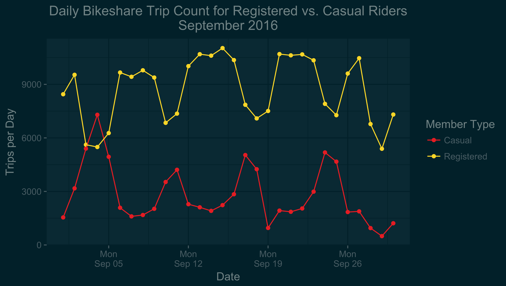
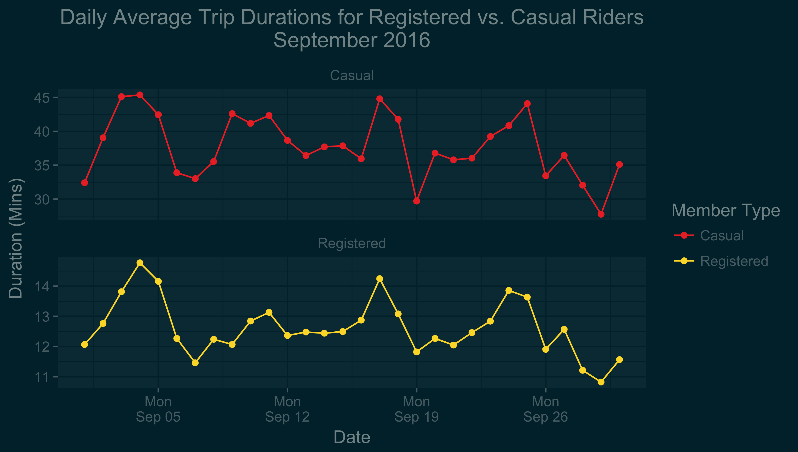
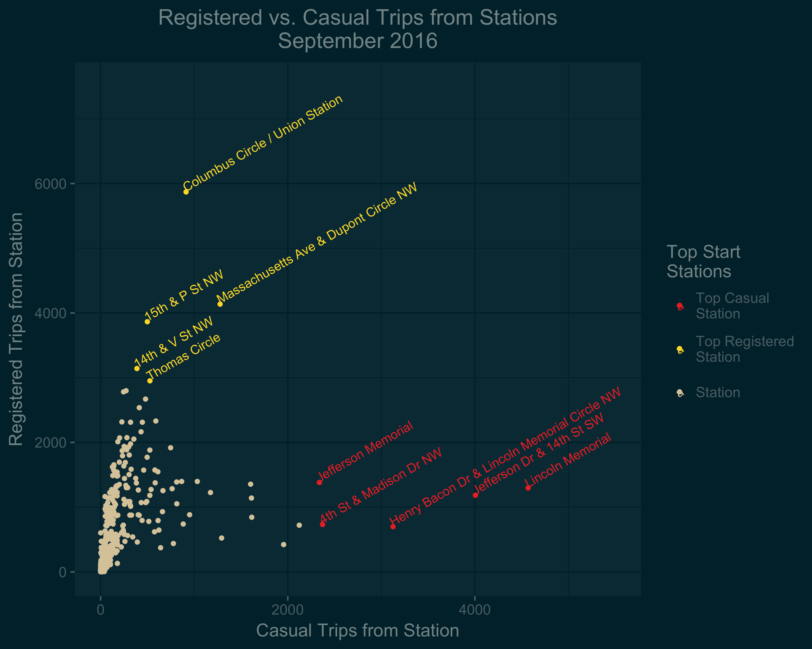

Red Capital Bikeshare bikes started appearing in Washington, DC in 2010. The system has taken off since then, with riders taking hundreds of thousands of one-way trips from one bike dock to another every month. The system is responsible for a significant increase in biking in DC, but has its problems, including empty or full stations when users want to take or dock a bike. In an attempt to alleviate some of these problems, "rebalancers" truck around bicycles, bringing them from full stations to empty ones. Capital Bikeshare is appealing to both residents, who can register for annual memberships ("Registered" riders), and to tourists, who can purchase short-term memberships ("Casual" riders). Understanding how different groups of people are using Capital Bikeshare could help rebalancing to happen more strategically and efficiently.
The first thing I wanted to know is when people are riding. Is it more on weekdays or weekends? Is that the same for registered and casual riders?

In fact, looking at the daily data for September 2016, we see that the number of tourist trips spikes on the weekends, while the number of commuter trips dips on the weekends. Additionally, we see that on Sunday, September 4 (the Sunday of Labor Day weekend), there is an especially high peak for casual rider trips, and an especially low dip for registered user trips; this makes sense: many people travel over that long weekend, with residents traveling away, and tourists traveling to DC.
The next question I asked was if there was a difference in trip lengths between registered and casual riders and, if so, how that varied from day to day.

There is a major discrepancy in trip lenths between registered and casual riders. The average daily trip lenth of registered riders ranged from roughly 10 to 15 minutes in September. The average daily trip length of causal riders, on the other hand, ranged from roughly 27 to 45 minutes in September, significantly longer than the average trips of registered riders. The interesting thing here, though, is that the plots for the two groups track each other quite well. That is, we see a direct relationship here between the average trip times of the registered vs casual users unlike for the trip counts, where there was an inverse relationship.
I was also interested to know if there were stations that tended to be frequented by one group more than the other group of riders.

In fact, we see that there is no overlap between the top stations for trip starts for casual riders and registered riders. Casual riders tend to start their trips in touristy areas, around the monuments on the National Mall. Registered riders' most commonly used start stations are in more residential and commercial areas.
These visualizations only start to scratch the surface of the treasure trove of data that Capital Bikeshare and other bikeshare systems have published.
The data for this visualization is too large to include here or on my Github. However, you can easily download it from Capital Bikeshare's AWS S3 Bucket. You will need to download the 2016-Q3-cabi-trips-history-data.zip file, unzip it, and then use the 2016-Q3-Trips-History-Data-2.csv file. The code for producing each of the three individual plots is on my Github site.